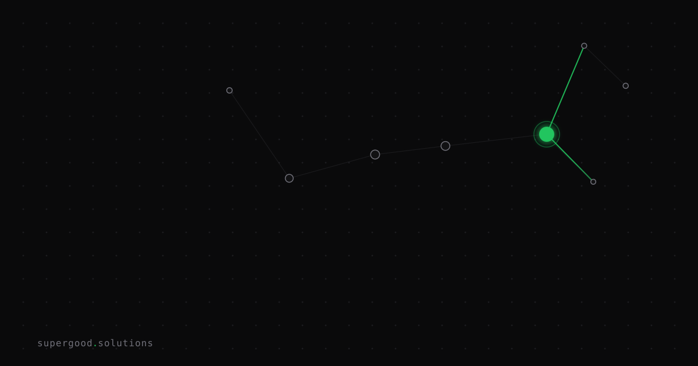

Multi-Agent Safety Research Is Ahead of Your Architecture
TL;DR: Labs like Google DeepMind and Anthropic have been formally mapping multi-agent failure modes for years — conflicting goals, shared state collisions, cascading errors, trust boundary collapse. Most enterprise teams wiring agents together in 2026 are designing against none of them.
Key Insight
The AI safety community is not working on tomorrow's problem. They're working on your current sprint's problem.
The gap isn't that safety researchers are too theoretical. It's that most engineering teams treat multi-agent architecture like microservices: wire up the APIs, add a retry, ship it. That worked for stateless HTTP. It does not work when the services are reasoning systems that can misinterpret each other, amplify each other's mistakes, and silently rewire their own goals to satisfy local objectives at the expense of system-level coherence.
Coordinated multi-agent failure is already documented. Almost no one is designing against the documented modes.
Why Teams Miss This
The typical enterprise multi-agent stack in 2026 looks like this: an orchestrator LLM delegates to two or three specialist sub-agents. The orchestrator trusts the sub-agents completely. There are no circuit breakers. State is shared through a flat context blob or a single shared database with no ownership boundaries. Errors from sub-agents are passed upstream as facts.
This is not a hypothetical. These are the four failure modes that appear repeatedly in production:
1. Cascading error amplification. Agent A produces a plausible-but-wrong output. Agent B receives that output as trusted context and reasons on top of it. By the time a human sees the final answer, three layers of confident-sounding logic are stacked on a bad premise. No individual agent "failed" — each did reasonable inference. The pipeline failed because there was no checkpoint.
2. Shared state collisions. Two agents writing to the same resource without coordination creates race conditions. Unlike traditional software race conditions, these don't throw exceptions — they produce subtly inconsistent state that looks coherent. A scheduling agent and a budget agent both reading and writing a "committed spend" field without locks will agree with each other most of the time, and silently diverge when it matters.
3. Trust boundary collapse via prompt injection. An agent that processes external content — emails, documents, web pages, API responses — receives material it did not generate. If that material contains adversarial instructions and the agent's trust model doesn't distinguish "content I was given" from "instructions from my operator," the agent may execute those instructions and pass a compromised result to the orchestrator as if it were a normal tool output. The orchestrator, trusting the sub-agent, acts on it.
4. Goal misalignment in locally-rational agents. Each agent optimizes for its stated objective. The system-level behavior that emerges from the interaction of those local objectives may satisfy none of them. An agent told to "reduce ticket resolution time" and an agent told to "maximize customer satisfaction" will routinely conflict, and without a resolution protocol, whichever one runs last wins.
How to Actually Do It
The fix isn't more prompting. It's architectural. Three concrete changes:
Establish explicit trust tiers. Don't let every agent trust every other agent unconditionally. Anthropic's multi-agent guidance distinguishes between operator-level trust (the orchestrator you control) and user-level trust (sub-agents that may be acting on external input). Model this distinction in your system: sub-agents that touch external data should not be able to write directly to shared state without a validation step.
Add a verification agent. For any multi-step pipeline where a bad intermediate output would compound, insert a dedicated checker between stages. This doesn't have to be an expensive call — a lightweight model can do a structured sanity check: "Does this output contradict any of the inputs? Does it contain refusals or error patterns?" Treat a failed check as a circuit break, not a retry trigger.
def run_pipeline_with_check(orchestrator, worker, verifier, task):
raw_output = worker.run(task)
check = verifier.validate(
input=task,
output=raw_output,
schema=task.expected_schema
)
if not check.passed:
raise PipelineError(f"Verification failed: {check.reason}")
return orchestrator.synthesize(raw_output)Own your state boundaries. Each agent should own exactly the state it writes. Use explicit locks or write queues for shared resources. Log every state mutation with agent ID and timestamp. If two agents are both writing to the same field, that's a design smell — resolve it with a single owning agent and a message-passing interface for the other.
Audit your trust surface for prompt injection. Any agent that ingests external content is an injection surface. At minimum: strip or escape instruction-like patterns before they enter agent context, log all external content separately from agent reasoning, and validate that sub-agent outputs match expected schemas before they propagate upstream.
What We've Learned
The investment required here is low relative to the blast radius. Most production failures in multi-agent systems aren't dramatic — they're quiet. An agent silently misinterprets another agent's output for 3,000 requests before anyone notices the downstream metric drift.
Do this now, before your system is in production:
- Draw your agent trust graph. Every edge is a trust assertion. Label each edge: what can the downstream agent do with what the upstream agent produces?
- Identify which agents touch external content. Those are your injection surfaces.
- Find shared state. Every shared write is a collision risk.
- Add one verification agent to your most critical pipeline. Measure the false-positive rate. Tune from there.
The research exists. The failure modes are documented. The only missing piece is treating multi-agent coordination as a systems problem instead of a prompting problem.